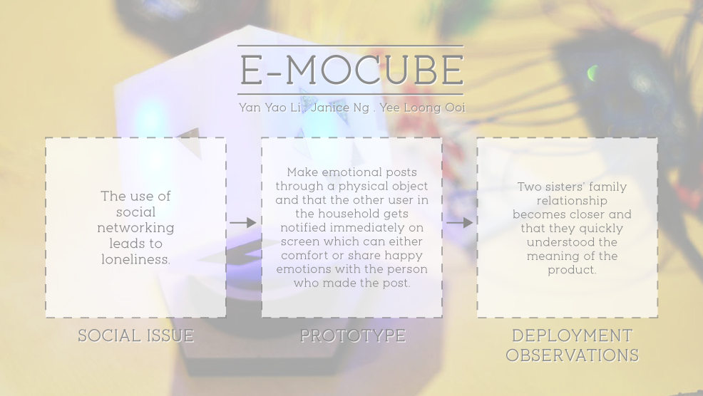
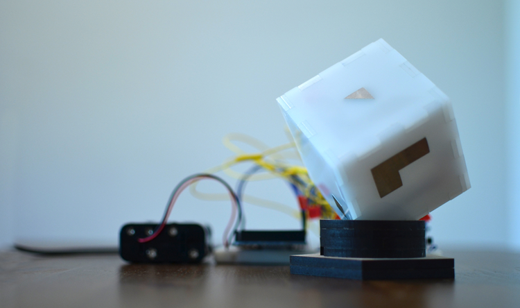

Type
School project
Role
Electrician
Fabricator
Cinematographer
Film Editor
Tools


Team
Yan Yao Li
Yee Loong Ooi
Objective
Develop a speculative design piece to be deployed at a household where users will reflect on their actions with the product without knowing its functionalities.
Process
The challenge in producing a speculative design piece is that it is not a functional product that can aid users in simplifying their life as a extension tool. On the contrary, reflection is involved upon their action when interacting with the object and it is up to them to discover the true functions of the product usage. Individually, the team began going through the various types of speculative design and particular choosing the category of Reflective Design for the base of our creation. Various ideations were drawn by hand sketches, followed by developing the concept of the overwhelming use of social media is fighting over our lives where we wanted to raise awareness of emotional issues found when using social media. In particular, we focused on Twitter, using its API in Processing, as well as communicating with Arduino to code the interaction between two cubes, found at two separate locations. Upon completion of the product, we deployed it at a friend’s household for one week, where we visited them several times to document results as they are using it. In this study, I was in charge of ideation, fabricating the product, interviewing and documenting the results of the household users.
- 
Result
Rather than always focusing on creating the best usability experience for users in a typical design class, the creation of a speculative design has offered me a different perspective in generating a design product where in the controversy, it is up to the users to create their own stories and usability with a product and that as a speculative designer, we are offering users with a chance of reflection when using the item, rather than simplifying their life.
- 